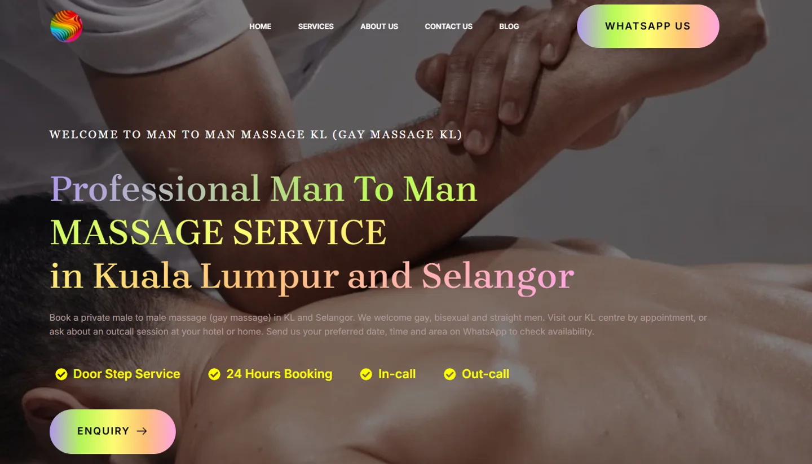
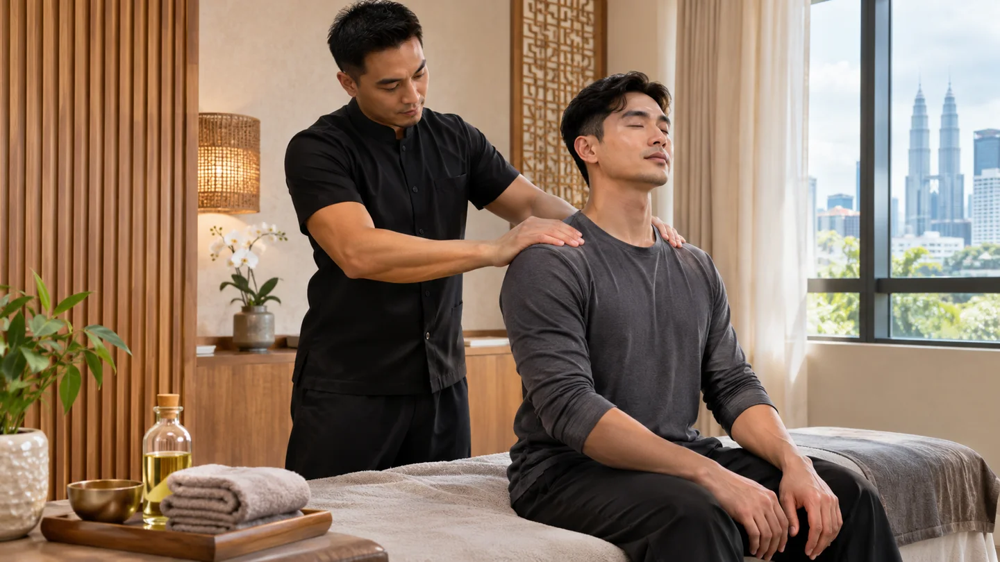

Discover a More Personalised Male Wellness Experience in Kuala Lumpur
Explore male-to-male massage in Kuala Lumpur and Selangor, with personalised aroma oil, deep tissue, sports and traditional wellness sessions.
Read article →Discover professional massage styles, practical wellness tips and personalised care in Kuala Lumpur and Selangor.
Explore massage services →
Explore male-to-male massage in Kuala Lumpur and Selangor, with personalised aroma oil, deep tissue, sports and traditional wellness sessions.
Read article →
Not sure which massage to choose after a gym session? Compare sports and deep tissue massage in KL, from pressure preferences to focused muscle care.
Read article →
Compare aroma oil and traditional Chinese Tui Na massage in KL. Discover which private male-to-male massage style suits your preferences and routine.
Read article →